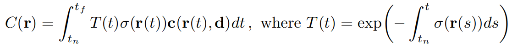

CS 184: Computer Graphics and Imaging, Spring 2023
Final Project Proposal: Constructing Meshes from a Set of Images
Eloy Ye, Esther Cai, Lillian Weng, Bryce Wong
Summary
For our final project, we plan on implementing two algorithms: one to convert multiple images of a real-life object into a point cloud,
and another to derive a mesh from the point cloud. Achieving this goal would provide us a streamlined method for visualizing real-world objects graphically.
Problem Description
The primary aim is to convert an object in the real world and represent it as a 3-D virtual object. In other words, creating a 3-D reconstruction of an object.
It is an important field in imaging because it allows us to view an object with multiple angles as opposed to just being confined to the camera’s view.
The General idea is that we would need a set of input images to extract the point cloud of the object by determining its world position and depth? Then converting
the extracted point clouds to the mesh of the object.
Goals and Deliverables
Given a set of images taken from different angles, we are aiming to:
-
Take a video of an object at different angles and sample every ~8 frames to obtain a set of images, or obtaining a set of images representing this object from different angles
- For each image, infer the camera positions and angles using a black-box implementation (ie. COLMAP)
-
Feed these images and camera angles into NeRF, turning a continuous function that maps a 5D vector input (3D location x = (x, y, z) and 2D viewing direction (θ, φ))
to output of a RGB color value and volume density.To reconstruct the model, we could sample from the output values, and obtain a point cloud of our object.
-
Given the point cloud, attempt a few mesh reconstruction algorithms:
- Ball-Pivot Algorithm
- Poisson Surface Reconstruction
- Alpha-shapes Algorithm (if time permits)
-
Use classical volume rendering techniques to accumulate those colors and densities into a 2D image. We could make this optional under time constraints.
-
Alternatively, if the above extracting point cloud->mesh methods are too difficult to implement, another way of visualizing the resultant 3D model could be
using volume rendering, which takes in the continuous function returned by NerF, cast a camera ray vector r from the current pixel, with the expected color
C(r) of camera ray r(t) = o + td with near and far bounds tn and tf:

-
(If we have time) color the mesh using one of the following algorithms:
- Barycentric Interpolation
- Triangle Projection
- Vertex projection
Schedule
Week 2 (April 10-16):
- April 11, 2023: Project 4 Due -> start working afterwards; wait for feedback
- Take videos, feed through COLMAP
Week 3 (April 17-23):
- Midterm 2 at April 20, 2023 (Thursday)
- Write code to generate point cloud
Week 4 (April 24-30):
- April 25, 2023: MILESTONE DUE
- Write code to turn point cloud into mesh using the listed algorithm
Week 5 (April 31-May 5)
- May 5, 2023: FINAL DELIVERABLES DUE
- Finish work from Week 4 and (if we have time) code color mesh algorithms
- Consolidate results into a final project video and website
Resources
https://drive.google.com/drive/u/0/folders/12S0Zbx1npCttyBGMi4XOd72aVkoPz51U
https://arxiv.org/pdf/2003.08934.pdf
NeRF
COLMAP
Ball-pivot algorithm
Poisson surface reconstruction
Alpha-shapes algorithm
Volume rendering